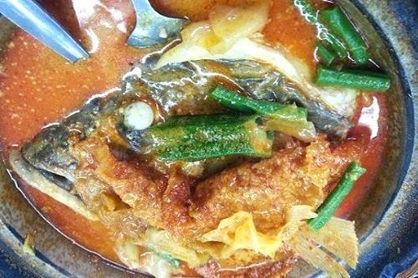

Spicy Singaporean Fish Head Curry
What is Spicy Singaporean Fish Head Curry?
Spicy Singaporean Fish Head Curry’s addictive gravy is made using a variety of spices normally found in Malay and Indian curries, not as tangy. The result is satisfying, a hot and mildly spicy gravy that titillates the tastebuds.
Ingredients
2 big fish heads (sear or king fish), each chopped into 2 pieces
1/2 cup thick Tamarind juice extracted from a Lime size ball of Tamarind
2 big onions, chopped finely
3 green chillies, slit lengthwise
2 tomatoes, chopped
1 tbsp Ginger paste
1 tsp Garlic paste
1/2 cup ground Coconut or 1 cup Coconut Milk
3 tsp chilli powder
1 tsp cumin powder
2 tsp coriander powder
1/2 tsp Turmeric powder
Salt to taste
3 tbsp oil
Instructions / How to Cook
1. Wash the fish heads well.
2. Heat the oil in a shallow vessel and saute the onions and green chilies till slightly brown.
3. Add the ginger and garlic paste, chilli powder, cumin powder, coriander powder, turmeric powder and chopped tomatoes and fry well for some time.
4. Add the coconut, salt, tamarind juice and a little more water and bring to boil.
5. Now add the fish heads and cook for about 10 minutes.
6. Garnish with chopped coriander leaves and slit green chilies.